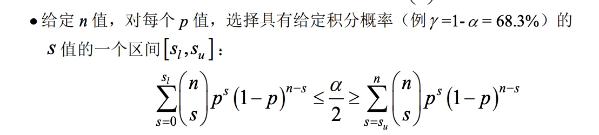
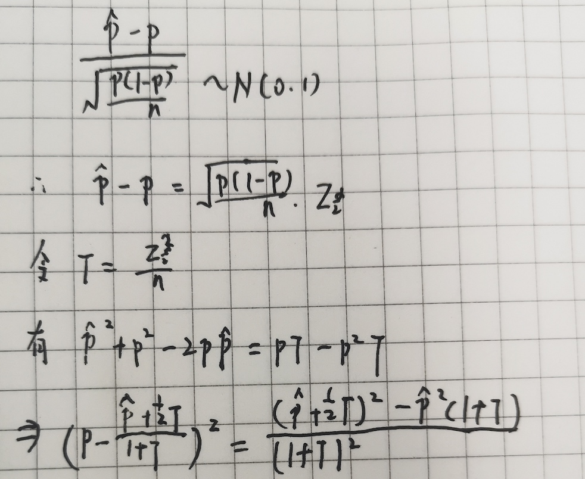
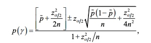
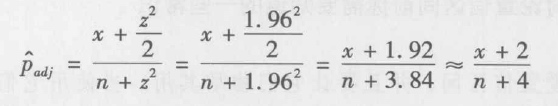

在大多数的研究中，我们无法获取研究对象的总体数据，或者能获取但是成本非常大。实际情况中，我们往往是通过抽样的方法，在总体中进行随机抽样。根据获取的这部分样本数据去推动总体的一些属性。比如通过抽样人群的平均身高去估计所有人群的平均身高，通过抽样人群中的男女比例，去估计我国当前的男女比例状况。
抽样样本量是直接影响到最终的估计准确度，所以这一章节，先来介绍下如何判断一种估计方法准确与否。
统计估计
统计中估计的方法有两类：点估计，区间估计。 比如问男性平均身高是多少，167cm就是一个点估计，160-170就是区间估计。
置信区间
根据前面介绍的常用的三种估计类型，其置信区间的计算方式也有所不同。
1. 比例的置信区间
例：假设抛掷一枚不均匀的硬币，其正面朝上的真实概率P位置，每次实验结果只有X=1表示正面，X=0表示反面两种结果。现在实验了n次，其中正面向上个数是k次，想估计下这个硬币正面朝上的概率是多少。
如果用点估计，自然的会用频率\(\hat p=\frac{k}{n}\)去估计真实的频率。而区间估计的主要步骤如下：
\[E(\hat p)=p, V(\hat p)=p(1-p)/n\]
所以有\[\hat p - N(p, p(1-p)/n)\]
\[\frac{\hat p -p}{\sqrt\frac{p(1-p)}{n}} - N(0,1)\]
经典的Wald区间
Wald估计是用样本比例替代整体比例，比例估计的置信区间是 \(\hat p \pm z_{1-\alpha/2} \sqrt\frac{\hat p(1-\hat p)}{n} \)
以上的置信区间是有个前提的：样本量比较大的时候，np>5且n(1-p)>5，二项分布才会近似是正态分布。
在样本量比较小，或者是真实的p值接近0或者1的时候，估计的就不是很准确了。
小样本的比例估计
在实际的问题中，这种情况也是经常存在的。以搜索为例，一个具体的搜索策略上线前，通常都会对实验组和对照组进行一些人工评估。因为人力成本问题，一般是评估100或200qu。可能里面的good或者bad的case占比非常少，那么在估计good或badcase的比例的时候置信度就不是很高。
下面介绍几种常用的修正的区间估计
(0) 精确区间
所谓精确区间，其实就是不对齐分布进行近似，而是直接使用原始的真实分布。我们知道正面朝上的个数k其真实分布是二项分布。这个一开始是Clopper和Pearson在1934年研究出来的，所以也叫做C-P 置信区间
\[P(x=s) =C_n^s p^s(1-p)^{n-s}\]

最终可以反解出来这个置信下限和置信上限，这里就不在列出具体公式了。
(1)Wilson区间/Wald矫正区间
注意Wilson和wald两种方法上的区别，wald在设置置信区间的时候是简化了问题，用样本比例近似了真实的比例。wilson认为\(\frac{\hat p -p}{\sqrt\frac{p(1-p)}{n}} - N(0,1)\)
简单的推理过程如下

最终推导出来的置信区间是

（2）wald矫正区间
上述的置信区间有一个简单的计算方式-加2法，即在数据中增加2个成功案例和2个失败案例,然后再用传统的wald区间估计方法
这是因为

2.等级量表和连续性数据的置信区间
我们做置信区间或者参数估计，最终目的是希望通过样本的数据去获得总体的信息。常见的就是对总体集中趋势的估计，而这种”集中趋势“根据数据本身的分布情况，可能会采取均值、中位数、众数做为其估计
（1）基于均值的
基于均值的估计，一般是在假设其分布比较对称的时候，均值是很好的对”集中趋势“的度量。根据样本量的大小，均值的置信区间可以用t分布或者z分布。
（2）基于中位数的
很多时候，数据本身的分布是不对称的，比如用户的网页结果的停留时长、用户点击的位置分布等。这个时候均值就不是一个很好的对总体集中趋势的估计了。实际中用的较多的是中位数。
但是中位数本身也存在一些问题。
- 变异性。中位数可以抵挡异常值对整体分布的影响，但是当从一个连续分布中抽样样本时候，中位数要比均值的变异性更大。均值可能相对比较稳定的，但是中位数可能跳动会很大。
- 偏倚性。平均值的一个好的性质就是估计的无偏性，
(3) 基于几何均值的
可以参考Sauro and Lewis2010年的一篇论文。
这里简单说下论文的主要结论吧：
- 样本中位数是总体中位数的有偏估计
作者主要比较了，均值，中位数，几何均值，调和平均值，截断均值(去掉最高和最低的topN)。 通过蒙特卡洛模拟的方法，对于n>25时候，样本中位数是个比较好的估计，对于n<25的时候，几何均值是一个比较好的估计
中位数的置信区间
特定类型的数据(比如任务时长，用户在搜索结果的停留时间)，要找到中位数的置信区间，中位数即p=0.5的那个分界点。其实相当于要找到p的置信区间。
\[\hat p \pm z_{1-\alpha/2} \sqrt\frac{\hat p(1-\hat p)}{n} \]
得到置信区间[p1, p2]之后，去找到数据中位于[p1,p2]分界点的数据点即为中位数的置信区间了。
参考资料
维基百科 https://en.wikipedia.org/wiki/Binomial_proportion_confidence_interval#Wilson_score_interval
https://indico.ihep.ac.cn/event/6182/contribution/4/material/slides/0.pdf